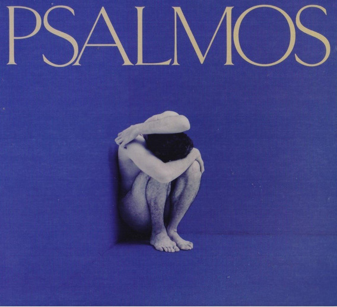

| Principal | Links | Discografía 1 | Discografía 2 |
|  | Psalmos es el nombre del cuarto álbum de estudio de José Madero, lanzado el 6 de septiembre de 2019. El álbum contiene 12 canciones y tiene un sonido más apegado al britpop, según palabras de su autor. Para la composición de las letras de este disco, José Madero viajó al estado de Maine en los Estados Unidos al igual que lo hiciera diez años antes para la composición del álbum Poetics de la agrupación PXNDX. Originalmente, la temática iba a ser destinada a tocar el lado oscuro del personaje de ficción Peter Pan pero el cantante terminó plasmando sus últimas experiencias personales en las canciones que habrían de conformar el disco. |
| Este año, Pepe nos ha deleitado con un nuevo sencillo de su proximo Album. Dicha canción tiene el nombre de Mercedes, subida ya como la primera canción del album con el mismo nombre. Este nuevo sencillo nos tiene desesperados por la entrega total de su nuevo album. |